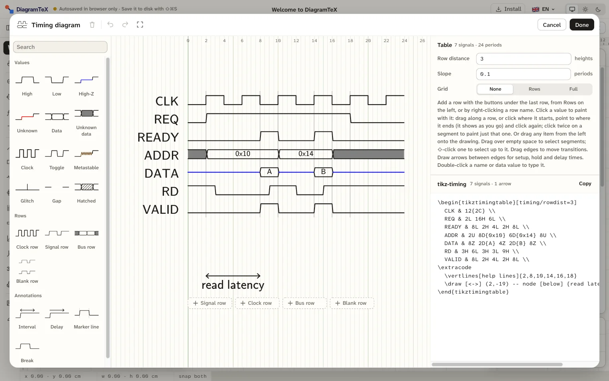

DiagramTeX/tikz-timing editor
Timing diagrams for LaTeX
tikz-timing editor: draw the waveforms, copy the LaTeX
Paint each signal along its row, drag the edges where they belong and mark setup and hold times between them. DiagramTeX writes the tikz-timing code as you go, ready to paste into Overleaf or any LaTeX document.
- Free and open source
- Works offline
- No sign-up
- Nothing is uploaded

tikz-timing code on the right.How to draw a timing diagram
- Add a Timing block: open DiagramTeX, click the cube on the left rail, pick Timing and click the canvas. Double-click the block to open its editor.
- Paint a signal: pick a value (H high, L low, Z high-Z, D data, C clock…) and drag along a row.
- Move a transition: drag the edge. Hold Shift and the rest of the row follows.
- Mark setup or hold time: drag Interval or Delay between two edges.
- Change several at once: drag across segments, or press CtrlA (⌘A on a Mac), then pick a value.
- Copy the code: press Done, then CtrlE (⌘E on a Mac) and Copy.
Example: Synchronous bus transaction with wait states
This is the code DiagramTeX writes for the timing diagram in the picture above. The first line names the packages to load.
tikz-timing snippetOpen it in DiagramTeX and edit it
% Requires: \usepackage{tikz} \usepackage{tikz-timing}
\begin{tikzpicture}[x=1cm, y=1cm]
\node at (5.21,-4.81) {\pgfinterruptpicture%
\begin{tikztimingtable}[timing/rowdist=3]
CLK & 12{2C} \\
REQ & 2L 16H 6L \\
READY & 8L 2H 4L 2H 8L \\
ADDR & 2U 8D{0x10} 6D{0x14} 8U \\
DATA & 8Z 2D{A} 4Z 2D{B} 8Z \\
RD & 3H 6L 3H 3L 9H \\
VALID & 8L 2H 4L 2H 8L \\
\extracode
\vertlines[help lines]{2,8,10,14,16,18}
\draw[<->] (2,-19) -- node[below] {read latency} (8,-19);
\end{tikztimingtable}%
\endpgfinterruptpicture};
\end{tikzpicture}What the editor does
- Every signal value: high, low, high impedance, data, clock and more, painted along a row.
- Edges where you want them: drag a transition; Shift moves the rest of the row with it.
- Setup, hold and delay: marks between two edges.
- Code both ways: the code beside the diagram follows every change, and the diagram follows the code when you edit it.
- Bring diagrams in: paste a
tikztimingtableonto the canvas and it becomes a block you can edit. - Pictures too: export the diagram as SVG, PNG at any DPI, or PDF, for slides and data sheets.
Questions
- Is it free?
- Yes. DiagramTeX is free and open source (GNU AGPLv3), with no account, no paid tier and no ads. The code it writes for you is yours to use however you like.
- Does it work with Overleaf?
- Yes. Copy the code into your project and add what its first line names (
\usepackage{tikz-timing}). The LaTeX dialog can also download a.zipto upload to Overleaf. - Is my diagram uploaded anywhere?
- No. DiagramTeX runs in your browser and keeps your files there. Once it has loaded, it also works offline.